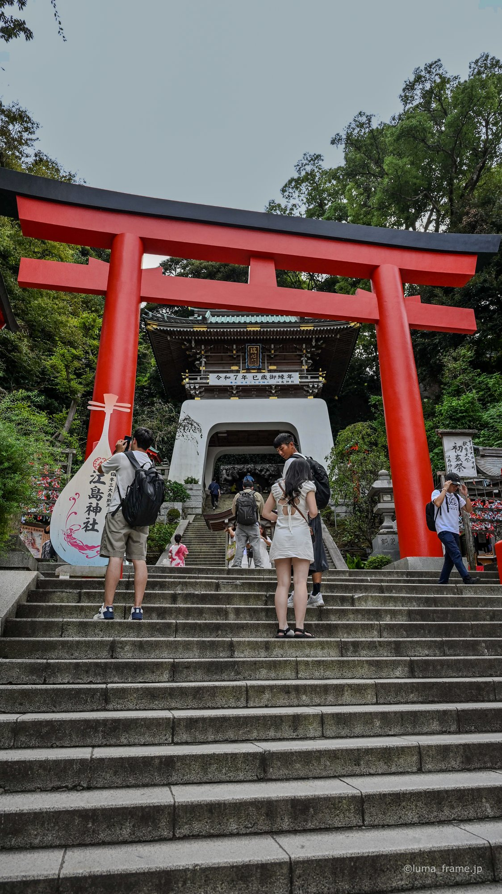
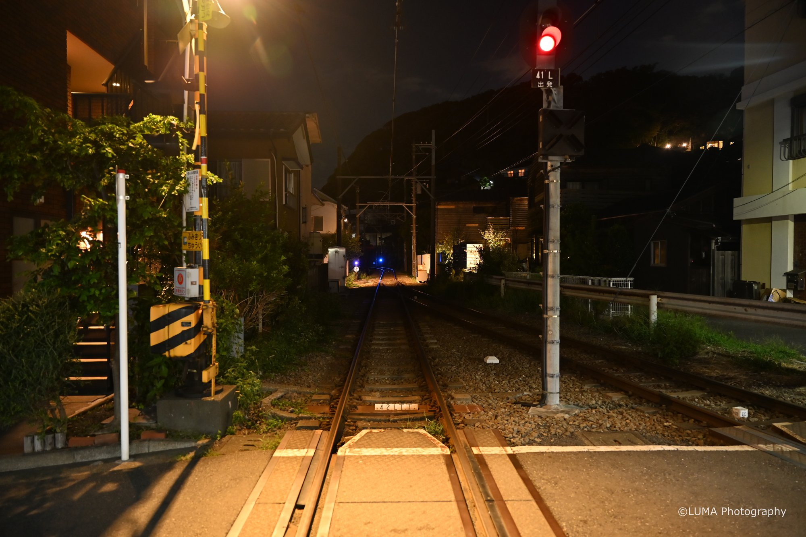
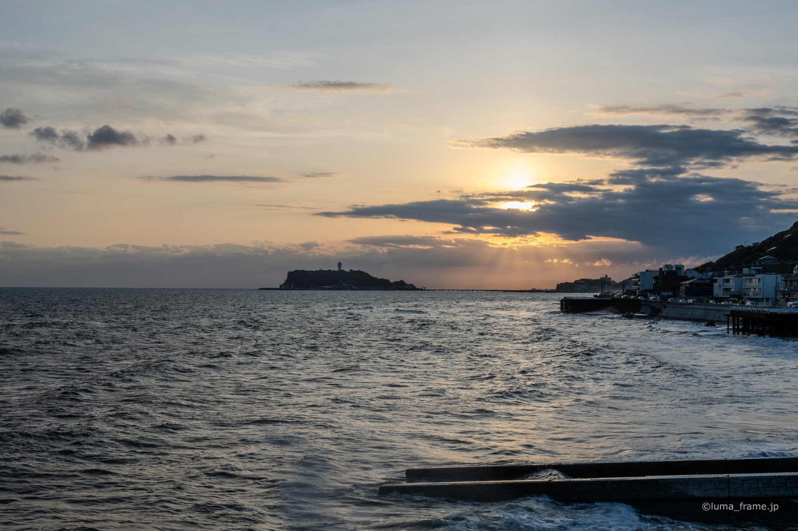
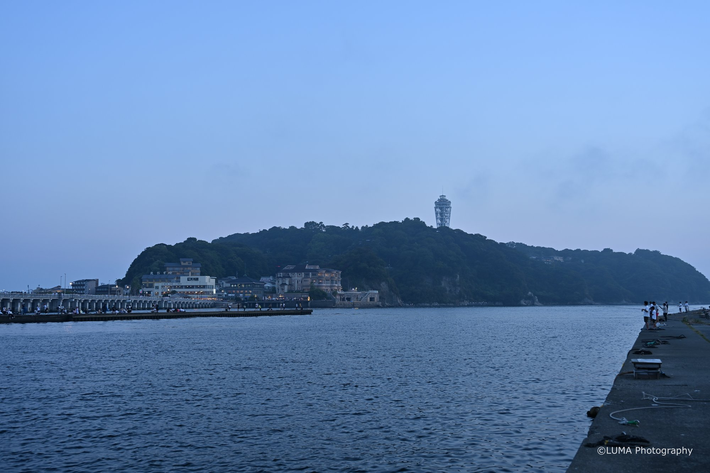
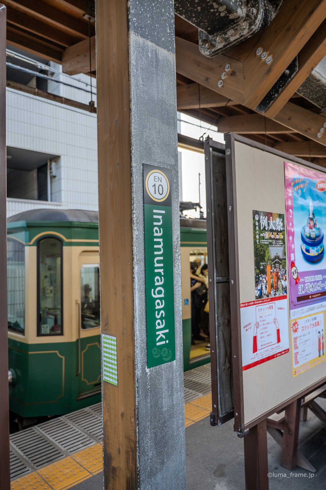
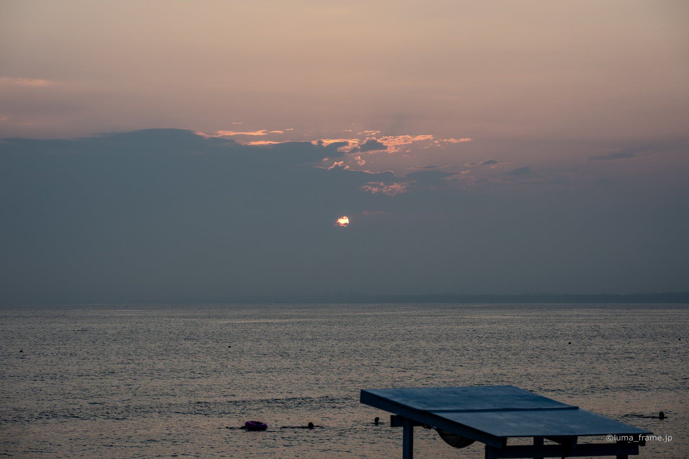

Sho's note
Sea Candle
The lighthouse deck's viewing floor is 101.56 metres above the sea, with Mt Fuji and the Tanzawa mountains on clear days. It's 800 yen.
An island of shrines, a lighthouse deck and sea caves, a 12-minute walk from Katase-Enoshima Station. Here's what I'd show you.
Planned lengths. One price per private group of up to six.
Up the island by escalator to the shrines and the Sea Candle.
Price TBDThe whole island, out to the caves, with shirasu for lunch.
Price TBDEnoshima in the morning, the Enoden to Kamakura after.
Price TBDEnoshima with the sunset at Chigogafuchi, then Kamakura.
Price TBD
I spent nine years in Brisbane, from junior high to the end of university, and I guide in English or Japanese. I check our food stops with each shop before the day.
The lighthouse deck's viewing floor is 101.56 metres above the sea, with Mt Fuji and the Tanzawa mountains on clear days. It's 800 yen.

The climb to the shrines is steep. The Escar covers 46 metres in about four minutes, 500 yen for all three sections.

The line joins Enoshima and Kamakura. With the 800-yen day pass we can get on and off as we like.
The bronze torii at the start of the island was first built in 1747 and rebuilt in 1821. The island is steep, and since 1959 the Enoshima Escar, Japan's first outdoor escalator, has lifted people 46 metres up it.
On the far side, Chigogafuchi is a rock shelf known for sunsets behind Mt Fuji, and the Iwaya caves are where worship on the island began.




Local shirasu is sold from 11 March to 31 December. Fishing stops from 1 January to 10 March, so there's no raw shirasu then.
Not really. It's mostly outdoors and steep, so on a wet day I'll suggest Kamakura or Yokohama instead.
Tell me your date, how many of you there are and anything you can't eat. I'll send back a route and a free quote.
Ask for a free quote →